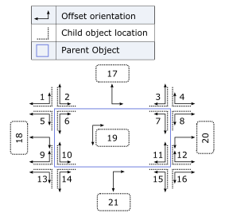

Position, Size and Scrolling
The functions listed below make it easier to scroll to, position, and size elements in the HTML.
$po(ELEMENT as element/string, PARENTELEMENT as element/string, TYPE as number/string , MAINOFFSET as number, SUBOFFSET as number)
The $po() function positions one element relatively to another. The first parameter in the element you wish to position.
Important: The 'position' CSS attribute of the element you wish to position must be set to 'absolute'. Otherwise the element's position cannot be altered.
The second parameter is the element you wish to position relatively to.
The third parameter defines where you would like the child element to be positioned relatively to the parent element. It can either be a number (see image below), or a keyword string (see table below).
In the image below, the blue box represents that element that you are positioning relative to. There are 21 different numbered position shown on the image. For example, position 1 will position relative to the top left corner of the element. Position 8 will position relative to the top right corner of the element. Position 20 will position centered on the height of the element on the right edge of the element.
The named positions (e.g. 'dropdown', 'flyout', etc.) will take page size into account, and automatically change the positioning of the element if there is not enough room.
The MAINOFFSET and SUBOFFSET parameters allow you to optionally tweak the positioning of the element by specifying an offset (in pixels) from the element's default position.
In the below image the longer offset orientation arrow represents the main offset, and the short arrow represents the sub offset. So for example, if you specify position 1, with a MAINOFFSET of 10, the right edge of the element that is being moved will be 10 pixels away from the left edge of the element you are positioning relative to. If you specify a SUBOFFSET of -5, then the bottom of the element you are positioning will be 5 pixels closer than normal to the top of the element you are positioning relative to.
| Keyword | Description |
| dropdown | Positions the child element relative to the bottom left corner of the parent object. (Will position above if there is insufficient space below the parent object.) |
| dropdown-right | Positions the child element relative to the bottom right corner of the parent object. (Will position above if there is insufficient space below the parent object.) |
| flyout | Positions the child element so that the left side of the child object is positioned relative to the top, right side of the parent object. (Will position left of parent if there is insufficient space to the right of the parent object.) |
| flyout-bottom | Positions the child element so that the left side of the child object is positioned relative to the bottom, right side of the parent object. (Will position left of parent if there is insufficient space to the right of the parent object.) |
In the diagram below, the 'long' arrow indicates the MAINOFFSET parameter and the 'short' arrow indicates the SUBOFFSET parameter for the $po() function.

Examples:
/*Position an element directly over another element.
Assume that 'overlay' is some object, perhaps a DIV with a transparent fill.
Assume that 'parentObject' is the object that you want to cover with some other object.
We want to position the overlay relative to the top left corner (position 6 in the diagram) of the parent object.
*/
$po('overlay','parentObject',6);
/*Position an element directly over another element and resize the overlay object so that it is the same size as the parent object.*/
$po('overlay','parentObject',6);
$sor('overlay','parentObject','wh');
/*Position an object as a 'dropdown' (position 14). However, if there is not sufficient space for the dropdown object below the parent object, then automatically use position 2.*/
$po('dropdownList','parentObject','dropdown');
/*Position an object below the parent object and centered in the width of the parent object.*/
$po('dropdownList','parentObject',21);
/*Position an object 20 pixels below the parent object and 10 pixels to the left of the center of the parent object.*/
$po('dropdownList','parentObject',21,20,-10);
$sor(ELEMENT as element/string, PARENTELEMENT as element/string, TYPE as string , FIRSTOFFSET as number, SECONDOFFSET as number)
The $sor() function sizes an element relatively to another element. I.e. the function makes one object the same size as another object.
The first parameter in the element you wish to size.
The second parameter is the element you wish to size relatively to.
The third parameter defines what properties you would like to size. It takes a string that contains 'w' and/or 'h'. For example, 'wh' if you want to size width and height, 'w' if you want to size width only.
The four and fifth parameters allow you to optionally specify pixel offsets. For example, if you specify to size the object to be 10 pixels wider and 5 pixels higher than the reference element, you would specify a FIRSTOFFSET of 10 and a SECONDOFFSET of 5 (assuming that you specified the TYPE as 'wh'). If you specified the TYPE as 'hw', then you would swap the order of the offsets.
Examples:
/*Sets the child object to have the same width and height as the parent object.*/
$sor('childObject','parentObject','wh');
/*Sets the child object to have the same width + 6 px and same height + 4 px as the parent object.*/
$sor('childObject','parentObject','wh',6,4);
/*Same as above example, but since TYPE was specified as 'hw' (and not 'wh'), the order of the offsets is swapped.*/
$sor('childObject','parentObject','hw',4, 6);
$swto(ELEMENT as element/string)
The $swto() function scrolls the window to the specified element.
Example:
/*Assume that the page contains a DIV that has an ID of 'detailView' that may not be visible because the browser window is not high enough. After refreshing the contents of this DIV you want to scroll it into view.*/
$swto('detailView')